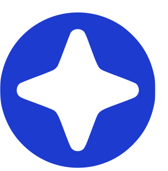
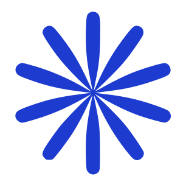

40%
Of care leaversare out of work, education or training by their early 20s.
Bringing a wider worldof work within reach.
At 18, young people leaving the care system often face adulthood alone.
are out of work, education or training by their early 20s.
compared to
That’s 3× the rate.
They’re resilient, driven and loyal.
Traditional hiring routes weren’t built for them.



Bringing a wider worldof work within reach.
Wingspan helps employers hire care-experienced young people, and supports both until the job sticks.
Coached, job-ready, matched to your roles.

Practical guidance for your team from day one.

Ongoing support beyond the start date.

Change a young person’s future for good.

Be one of the first to redefine what’s possible from care to career.
Our London pilot begins February 2027.
We’d love to tell you about it.